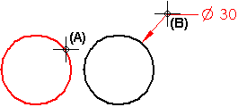
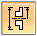
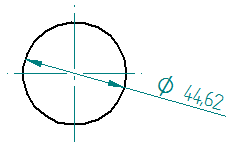
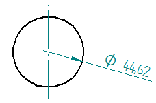

Example: Dimension the diameter of a circle
-
Click the Smart Dimension button.
-
Click a circle (A).
Smart Dimension dynamically displays a diameter dimension.
-
Position the dimension, and then click to place it (B).

-
Before you click to place the dimension, you can change the dimension from diameter to radial by pressing the D key on the keyboard.
You also can use the following buttons on the Smart Dimension command bar to switch between radial and diameter dimension type:
Radius dimension

Diameter dimension

-
When you select the Diameter dimension type, you also can use the Diameter-Half/Full option on the command bar to change the witness line display format.
When the option is set to this
This format is used
Full


Half


How do I
Example: Dimension the length of a lineDimension similarly sized holes
Example: Dimension a curved slot
Place concentric diameter dimensions
Place a feature callout dimension
Place a 3D dimension on a pictorial drawing view
Define smart feature properties in the Dimension style
Look up more details
Smart Dimension commandSmart Dimension command bar